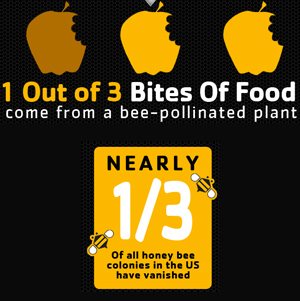
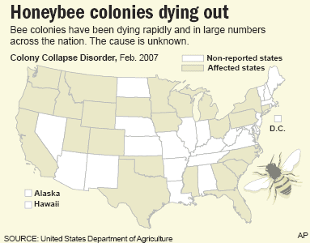

Rising prices at your local supermarket are the least of your concerns. This is a story that is sadly gravely under reported, and that is the story of our depleting Bee population. Most farmers today still use Bees to polinate and seed their crops and For reasons that are not yet fully understood worker bees have been vanishing from their parent hives at an alarming rate. Bees use a type of pheromone based sonar to find their way back to their hives, this has always been so and is what allows the bees to be able to travel great distances from their hive and have no trouble finding their way back. For the last few years however bees have been losing their ability to do this and have begun to get lost and die. They leave the nest to pollinate and never return. The best guess scientists have been able to come up with is that dramatic changes in the atmospheric pressure due to ozone depletion coupled with the use of harmful pesticides has damaged the bees capability to work properly.
This accounts for the rise in food prices and for the increase in seasonal food shortages, farmers are doing what they can to try and stem the flow of this growing problem but it continues to become a growing concern. Bee keepers are losing their bee population faster than they can replace them and are therefore charging significantly more for their services. Without our bees we will have a near impossible task of providing enough food for all the planets inhabitants.

